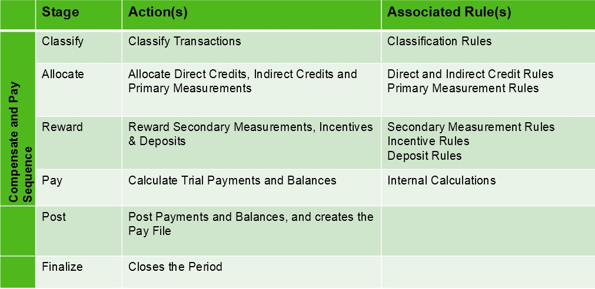
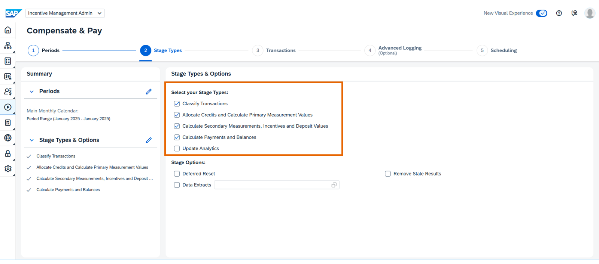
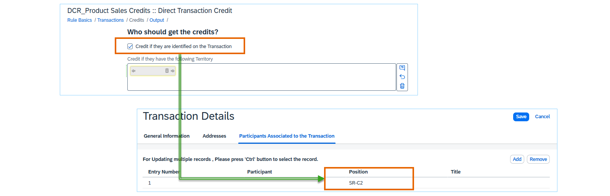
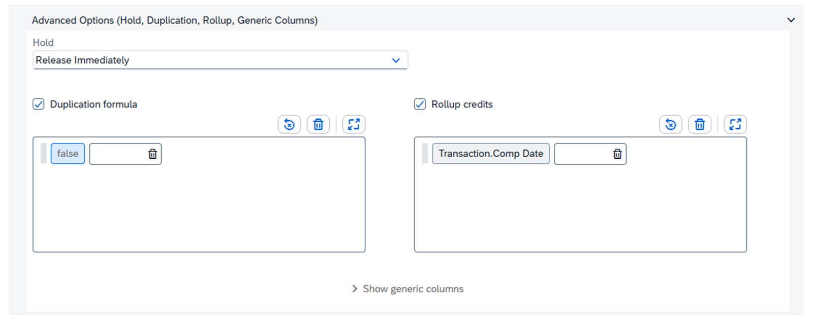
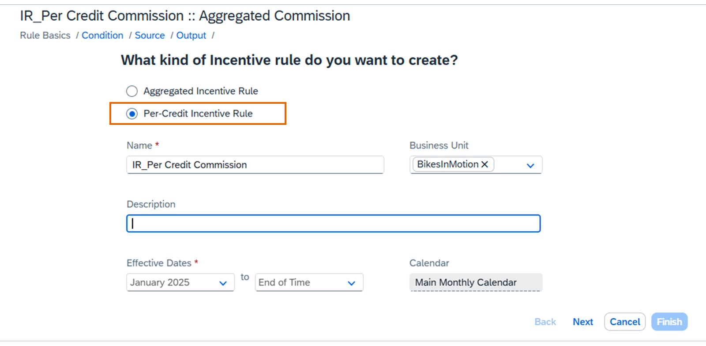
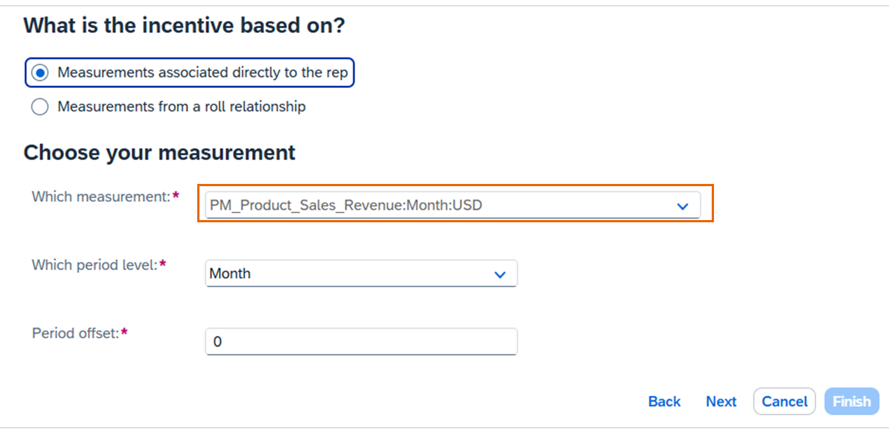
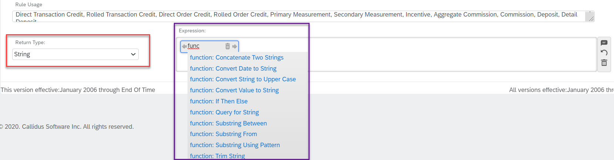
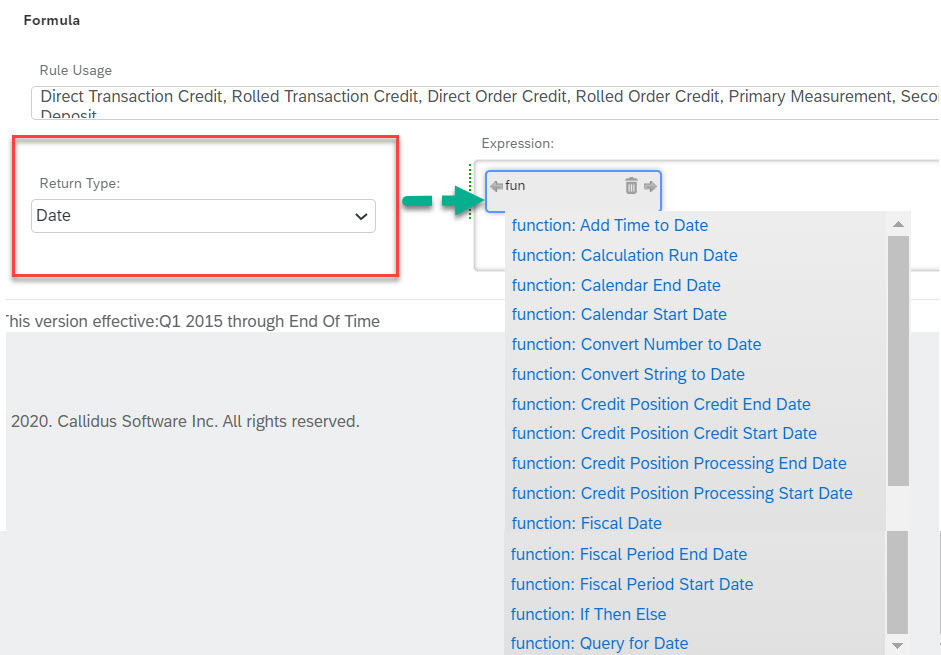

1. The pipeline the rules feed

Calculation stages diagram. Runs execute as Compensate and Pay: Classify → Allocate → Reward → Pay (with Post and Finalize as additional stages). Data flows Transaction → Credit → Measurement → Incentive → Deposit → Payment.
Compensate & Pay wizard (official SAP Learning screenshot): steps Periods → Stage Types → Transactions → Advanced Logging → Scheduling, with stage checkboxes (Classify / Allocate / Reward / Pay).2. Building rules — Rules Wizard (Plan Data menu)
Rules live under Plan Data (Plans Wizard + Rules Wizard). Rules can be built standalone in the Rules Wizard, or inline: Plans Wizard → select plan → Edit → e.g. Credit Rule → Create New Rule.

Credit rule "DCR_Product Sales Credits :: Direct Transaction Credit" — sections Rule Basics → Transactions → Credits → Output; the UI asks "Who should get the credits?" and maps transaction fields to credit outputs.
Advanced Options (Hold, Duplication, Rollup, Generic Columns) with expression boxes for Duplication formula and Rollup credits — this is where behavior beyond simple mapping is written.Incentive rules

Incentive rule "IR_Per Credit Commission :: Aggregated Commission" — "What kind of Incentive rule do you want to create?" (Aggregated vs Per-Credit), Effective Dates, Calendar.
Second incentive-rule screen from the same official lesson: rule steps/measurement wiring.3. The expression editor — Functions and Formulas

Real editor UI (SAP Community capture): Expression box with the formula text, Return Type = String, a Rule Usage panel listing every rule context the formula is valid in, and an autocomplete dropdown offunction: entries (Concatenate Two Strings, If Then Else, Query for String, Trim String…).

Date function variant of the same editor.How formulas get inserted into plans: the formula text is written in per-rule expression fields (e.g. the Condition tab's Show Window Editor, or an amount/output field). The editor has Return Type, Expression pane, Function pane, and the Legal Moves Editor (Literals / Functions / Data Fields / References) — typing
n: lists functions, * lists legal moves. Saved formulas carry Rule Usage (valid contexts) and an Associations tab showing which rules/elements use them.Example syntax (from SAP's function reference):
Prorate percentage = Measure Period Overlap Percentage [((Position Processing Start Date (true)), (Positions Processing End Date (true)), (Fiscal Date (quarter, 0, Start Date)), (Fiscal Date (month, 0, End Date)), month, false)]
Other functions: Sum Prior Quotas or Fixed Values, Sum Prior Measurements, Sum Measurements to Date, Sum Prior Incentives, Max and Min, Round, Absolute, If Then Else, Fiscal Date, Transaction.Classifier().